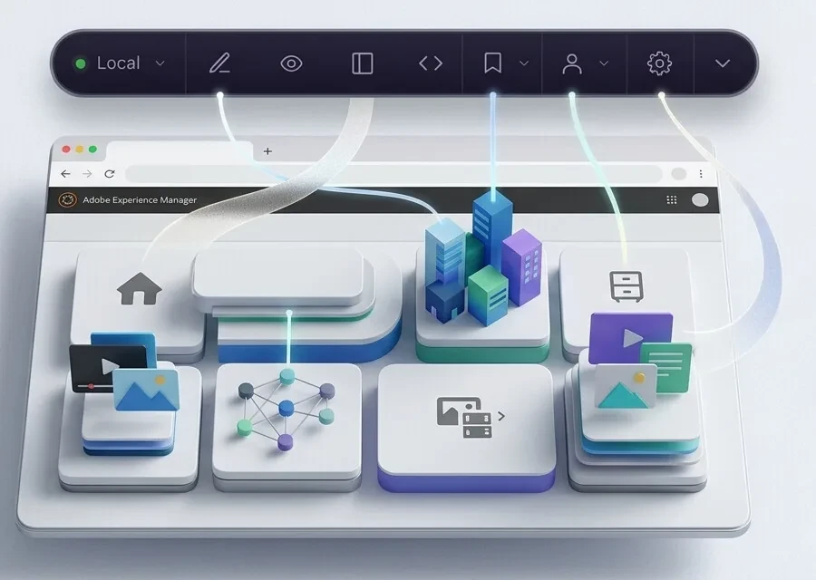

Extensión gratuita de Chrome · MIT · no es un producto de Adobe
La barra de AEM,
a un clic
Toolbar AEM es una extensión gratuita de Chrome que añade una barra flotante a las páginas de Adobe Experience Manager. Salta entre Editor, Vista, Sites y CRXDE, y entre Local, Dev, QA y Stage, sin reescribir URLs. La ruta del contenido se mantiene.
Un clic · misma ruta · cualquier entorno

Concepto
Deja de montar URLs de AEM a mano
Revisar una página en el Editor, luego publicada, luego en Stage y después su nodo en CRXDE significa editar la URL cuatro veces. Toolbar AEM la reescribe por ti y mantiene la ruta del contenido.
Abre cualquier página de AEM
La barra aparece en localhost, en los hosts de AEM Cloud y en cada entorno que configures.
Elige una consola o un entorno
Editar, Vista, Sites, CRXDE, o Local, Dev, QA, Stage: un clic para cada uno.
Aterriza en el mismo contenido
La misma ruta de contenido se abre en la consola y el entorno de destino, con la forma de URL correcta.

Funciones
Qué hace Toolbar AEM
Cambio de consola
Abre la página actual en Editor, Vista, Sites o CRXDE. Vista puede añadir
wcmmode=disabled.Cambio de entorno
Reabre la misma consola y ruta de contenido en Local, Dev, QA, Stage o cualquier entorno que definas.
Un favicon por entorno
Cada pestaña toma el color de su entorno, así Stage nunca se confunde con Local.
Marcadores
Atajos a las rutas que más usas. Una ruta suelta se abre en el entorno actual.
Botón «Ir a la ruta»
Junto a los campos de ruta de Granite UI: abre la ruta escrita en Assets, Experience Fragments, Sites o CRXDE.
Ajustes de equipo y plugins
Exporta los ajustes como JSON, o incluye marcadores del proyecto y reglas de consola en un archivo de plugin.
Instalar
Cómo instalar Toolbar AEM en Chrome
Toolbar AEM no está en la Chrome Web Store. Se instala como extensión sin empaquetar, en cuatro pasos y unos dos minutos.
Necesita Google Chrome con el Modo desarrollador activado en la página de extensiones. Sin cuenta y sin paso de compilación.
-
Descarga el repositorio
Descarga el ZIP y descomprímelo, o clónalo con git.
git clone https://github.com/nandomunoz/toolbar-aem.git -
Abre la página de extensiones y activa el Modo desarrollador
Pega esto en la barra de direcciones y activa el Modo desarrollador, arriba a la derecha.
chrome://extensions -
Pulsa «Cargar descomprimida» y elige la carpeta
Selecciona la carpeta
extensiondel repositorio descomprimido o clonado: la que contienemanifest.json. -
Configura tus entornos
Pulsa el icono de la extensión para abrir la página de opciones. Añade la URL de autor de cada entorno, guarda y recarga tus pestañas de AEM.
Para actualizar: descarga o haz pull de la nueva versión en la misma carpeta y pulsa el icono de recarga de Toolbar AEM en chrome://extensions.
Configurar
Dónde aparece la barra
Toolbar AEM aparece en localhost, en los hosts adobeaemcloud.com y aemcloud.net, y en el host exacto de cada entorno que añadas. Con AMS u on-premise basta con añadir el entorno.
| Configuración de AEM | La barra aparece | URLs que construye |
|---|---|---|
| AEM as a Cloud Service | Automáticamente | Shell unificado: /ui#/aem/editor.html/… |
SDK local (localhost:4502) | Automáticamente | Clásicas: /editor.html/… |
| AMS u on-premise | Una vez añadido como entorno | Clásicas: /editor.html/… |
Los ajustes se guardan con chrome.storage.sync, así que te siguen en tu perfil de Chrome. Los equipos pueden compartirlos como archivo JSON o incluir sus propios valores por defecto en default-config.json.
Privacidad
Sin datos recogidos, sin peticiones de red
Toolbar AEM no recoge datos, no tiene analítica y no hace peticiones de red por su cuenta. Sin CDN, sin fuentes remotas, sin código remoto.
storageGuarda tus ajustes en tu perfil de Chrome.<all_urls>Tus entornos pueden estar en cualquier host. En cualquier otro host el script termina sin tocar la página.
Preguntas
Preguntas sobre Toolbar AEM
¿Es gratis Toolbar AEM?
Sí. Toolbar AEM es gratuita y de código abierto bajo la licencia MIT, también para proyectos comerciales, siempre que se conserve el aviso de copyright.
¿Está Toolbar AEM en la Chrome Web Store?
No. Toolbar AEM se instala como extensión sin empaquetar desde su repositorio de GitHub: descárgala, activa el Modo desarrollador en chrome://extensions y pulsa «Cargar descomprimida». Mira cómo instalarla.
¿Es Toolbar AEM un producto de Adobe?
No. Toolbar AEM es una herramienta independiente de la comunidad. No la desarrolla, patrocina, respalda ni da soporte Adobe, y no contiene código de Adobe.
¿Funciona con AEM on-premise o AMS, no solo con Cloud Service?
Sí. Toolbar AEM funciona con AEM as a Cloud Service, AMS, on-premise y el SDK local. En AMS y on-premise, añade la instancia como entorno en la página de opciones y la barra aparecerá ahí.
¿Puede mi equipo compartir los mismos entornos y marcadores?
Sí. Exporta los ajustes como archivo JSON e impórtalos en otra máquina, o edita default-config.json y añade un plugin con los marcadores y las reglas de consola del equipo. No pongas nada confidencial en default-config.json: es un recurso accesible desde la web.
¿Aparecerá la barra en las auditorías de Lighthouse o en las capturas de pruebas?
No. Toolbar AEM no se muestra en navegadores automatizados como Lighthouse o WebDriver.
¿Puedo ocultar la barra y quedarme solo con los favicons de colores?
Sí. Desactiva «Mostrar la barra» en la página de opciones; el favicon por entorno sigue funcionando. También puedes arrancarla plegada o moverla a la parte superior de la página.
Descargar
Menos teclear,
más AEM
Gratis, de código abierto, instalada en cuatro pasos.